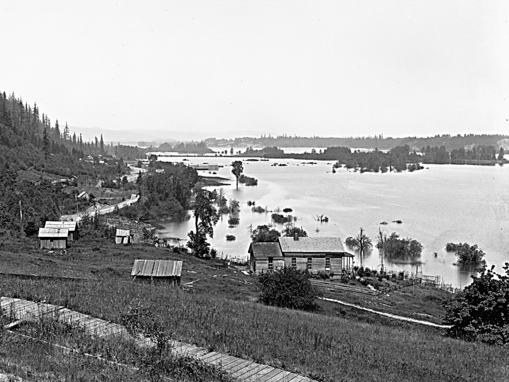

1874 House
Location in 1905: 45.53795581, -122.71530569
Current Location: 45.53758006, -122.71267176
Built in 1874 as a stagecoach inn on the road to Linnton. Moved to 3007 NW Wilson St in 2003, to make way for new construction. 